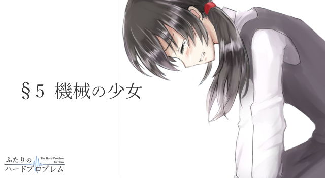

時刻は昼の11時過ぎ。
数時間前まで力なく赤らんでいた太陽はすっかり高くに登ってしまい、わずかばかりの暖かさを含んだ陽光が街全体を明るく照らしだす。そんな日差しのなかで上空を眺めてみれば、そこにあるのは寒々しい枯れ木とその向こうに広がる薄水色の空。北風に吹かれてなおその場に留まろうとする一筋の巻雲が、さながら空に刻まれた傷跡のように浮かぶ、そんな冬の空だった。
通勤・通学の時間帯も過ぎてしまった今、真揺ニュータウンはひっそりとした静寂に包まれている。時折車の走るエンジン音や、主婦が布団を叩く音、あるいは掃除機の排気音だけが、いまこの街を支配するすべてだ。
そしてここ、漸新台2丁目にある単身者用アパートの一室もまた静寂に沈んでいる。
音のない六畳の部屋。だがこことて完全な無音ではない。耳を澄ませばペンが紙を擦る音や本をパラパラとめくる音、そして微かな呼吸音が聞こえてくる。
「…………」
音の主である少女――リコは真剣な表情で数式と向かい合っていた。机の上に開いているのは高等数学の問題集。1ヶ月ほど前に買ってもらったものである。少女は書かれた問題文を眉一つ動かさずにゆっくりと読み込んでは、覚束ない調子でノートに数式を書き連ねていく。
「……あれ？」
どう見てもおかしい計算結果がはじき出され、その整った顔立ちが少しだけ曇る。だが少女はめげる様子などつゆとも見せず、自らの記した計算過程を頭からつぶさに検算していく。
ここ数日、リコはずっとこんな様子だった。
時間ギリギリまで寝ていたい希海はあまり朝食を食べてくれないし、その希海が大学へ行ってしまっている以上、昼食の用意も必要なければ部屋もほとんど散らからない。掃除機をかけたところで狭い部屋なのですぐに終わってしまうし、洗うべき衣服だって一日に一人分しか出ない。そんなわけでリコはここ数日、暇を持て余してはこうして勉強を進めることにしていた。
かりかり、と規則的にペンを動かす音。
やがて計算が完了したのか、少女はペンを置くとテキストのページをめくって答えを確認する。どうやら正解だったようだ。少女はふぅと一息つくと、そのまま教科書を閉じて立ち上がった。そのまま部屋の隅にまで歩いて行き、ベッドに置いてあった時計を手に取り時刻を確認しするも、部屋の主が帰ってくるまでにはまだかなり時間がある。
ちらりと窓から外の様子を窺う。
だが、ひと気のない通りでは木々が木枯らしに吹かれているだけで、誰かが通る気配など一向になかった。ましてや少女の主の姿など……。
おそらく希海は今日も夜遅くに帰ってくるのだろう。今晩も食事の仕度は必要なさそうだとリコは思った。最近の希海はいつも大学で食事をすませてくる。昨日もそうだったし一昨日もそうだった。そして今日も多分――
はぁ、とひとつ溜息をつき、机の前に腰を降ろした。そして問題集を開き、ふたたび数式とのにらめっこを始める。
少女が勉強を再開すると部屋の中はふたたび静寂に支配された。かりかり、とペンが紙を擦る音。ページをめくる音。微かな呼吸音。人を模した偽りの吐息。ただひたすらに教科書を読み進めるその横顔は凪いだ水面のようで、何らの感情も読みとれない。だがそんなどこか達観したような表情とは裏腹に、少女はまだ何も考えてもいないのだろうし、気付いてもないのだろう。
今の自分が、かつての自分と同じ状況にあることに。
小さな部屋で誰かを待っていたのは、これが初めてではないということに。